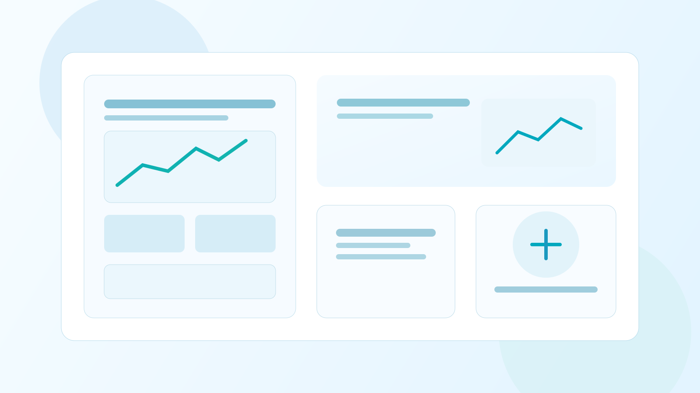
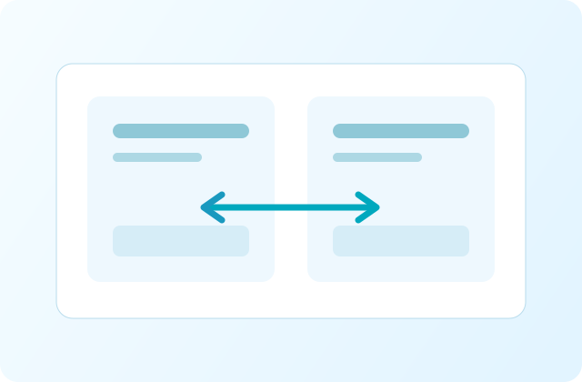

企業的軟體戰略：如何透過客製化開發，打造專屬的數位競爭力？
在追求數位營運的過程中，企業常面臨「系統遷就業務」的困境。本篇整理 2026 年常見的系統重構路徑，說明如何用可持續維運的客製化架構，支撐成長與決策品質。
常見問題、文件下載與相關資訊
以下是客戶經常詢問的問題，如有其他疑問歡迎與我們聯繫
我們會在提案階段提供明確的里程碑與交付時程，並在開發過程中定期回報進度。
服務時間為週一至週五 09:00-18:00（台灣時間），緊急問題可透過約定方式聯繫。
產業趨勢與實務觀點

在追求數位營運的過程中，企業常面臨「系統遷就業務」的困境。本篇整理 2026 年常見的系統重構路徑，說明如何用可持續維運的客製化架構，支撐成長與決策品質。
